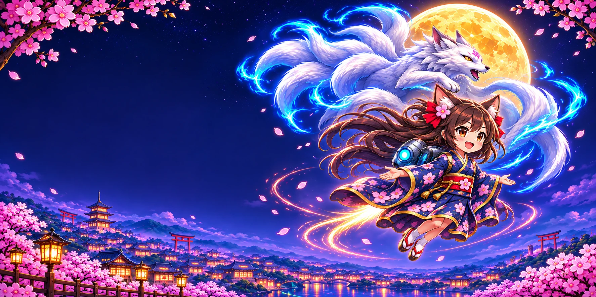

Simple to start
Tap to fly. Swipe forward to dash. Chase the center of each gap for a Perfect bonus.

INDEPENDENT GAMES · MADE WITH IMAGINATION
Welcome to the world of Chisa Moonlight Flight!—a moonlit adventure through sakura skies, mischievous yokai and magical transformations.
For iPhone & iPad · Portrait playTHE APP
Tap to keep Chisa airborne, thread the openings between yokai pillars, and chase your personal best. Tight close calls, magical pickups and a rare Kitsune transformation keep every run surprising.
Tap to fly. Swipe forward to dash. Chase the center of each gap for a Perfect bonus.
Slow time, shield yourself, reverse the world or unleash the fox spirit.
Earn rewind energy through skillful near misses, then choose when to spend it.
A TOUCH OF MAGIC
Every charm has its moment. Learn what to collect and when to make your move.
BEHIND THE MOONLIGHT
I’m an independent developer creating apps and games with imagination, personality and a little magic. Chisa Moonlight Flight! brings together my love of playful ideas and Japan-inspired fantasy.
I’m continuing to build on Chisa’s world, improve the experience and bring new ideas to life. Thanks for being part of the journey.
Get in touch →ON THE HORIZON
A future way to compare scores and chase the rankings.
Race against ghost flights in a future update.
These features are planned for future updates and are not available in the current app. No release date has been announced.
KEEP THE MAGIC GROWING
If you’d like to support future apps, artwork and game updates, you can make a voluntary contribution through PayPal. Every bit of encouragement means a lot.
Support with PayPal ↗Completely optional. Contributions do not unlock game features or affect your score. Payment is handled by PayPal.